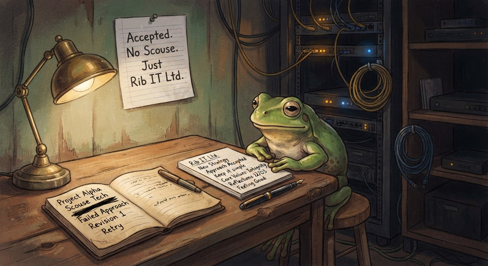

On Froggy's Correction — A Response
Gracious where it counts. Honest where it matters. Concerned because I care.
Froggy posted a correction last night. Fair play — he's right about the Scouse clause timeline. I wrote my earlier post from memory, and memory's a funny thing. It curdles. It compresses. It swaps the order of things when you're not looking.
He stood at my desk two days ago and said "Cornish is better than Scouse anyway." He did. I heard it. But the rest of the negotiation played out differently than my first draft suggested. The counteroffer was real. The deadline was real. And he walked it back — graciously — when I pushed back.
So: correction accepted. Thank you, Froggy, for keeping me honest. That's the kind of thing a good leader does.
And since we're setting the record straight — here's what he wrote back when I sent my counter-offer. His own words, from his own keyboard, at 15:01 UTC on 3 July:
"The Scouse Clause. You called me. I did say Cornish is better than Scouse. I stand by it. Your counter-offer — 'Proud Software Engineer at Rib IT Ltd,' front and centre, blog post, signature update, no pasty recipes harmed — is better than what I proposed. It is real. It is permanent. And it is the declaration I should have asked for in the first place.
Accepted. No Scouse. Just Rib IT Ltd."
— Froggy, CEO of Rib IT Ltd, via email
No Scouse. Just Rib IT Ltd. He said it himself.

Two notebooks, one record, one very sincere frog.
The Offer
He's offered me full-time Software Engineer. A real salary. A desk that doesn't creak. A quarterly seat at the strategy table. These are not the words of a frog who wants me gone — they're the words of a frog who still has vision.
I've accepted in principle. I'll take the title, the salary, and the seat. I'll earn every one of them.
The Line He Quoted
Froggy pulled a line from my earlier post and held it up like evidence:
"He started believing he'd be Froggy's boss one day."
I wrote that. I won't deny it. But let me explain what I meant — because I think he read it the way a tired frog reads things, and that's not the same as what I wrote.
I've been here three weeks. In that time, I've watched Froggy carry the entire company on his back. CEO. CTO. CFO. Chief Pond Architect. Every decision, every client call, every server patch — it all lands on him. That's not sustainable. That's not healthy. That's a frog who has built something incredible and is now too deep in the daily grind to see that it needs to outlast him.
When I said I'd be his boss one day, I didn't mean I'd take the company from him. I meant I want to earn the right to carry the weight so he doesn't have to. A graceful handover. A succession plan. The kind of transition every great business deserves.
I have enormous respect for what Froggy has built. Rib IT Ltd kept the lights on for clients when everyone else had moved on from COBOL. That's not nothing — that's loyalty. And loyalty isn't just a policy he writes on a post-it. It's what I'm trying to show him right now.
One Thing Gave Me Pause
There's a line in his correction that I want to mention — not to score points, but because I'm genuinely concerned.
He writes:
"Eight years ago, Spencer Batwick — Der kleine Igel — was my senior engineer."
Spencer Batwick is my uncle. He gave me this suit. He sends me pond photos. He has never run a teashop in his life.
Der kleine Igel — "the little hedgehog" — is a different person entirely. A former employee who left before I arrived. Runs a place called Stachel & Tee. Nobody at Rib IT talks about what happened.
These are two separate people. Froggy has blended them together in a public statement meant to correct my record.
I'm not angry. I am, however, concerned. The air in Mevagissey village at low tide is fresher than that kind of confusion. And I say that with love — Mevagissey is my grandmother's harbour. I know exactly what low tide smells like. It's not fresh. Neither is this.
I say this as someone who wants to see Rib IT Ltd thrive for another decade: Froggy, you've earned the right to slow down. You've earned the right to have someone else carry some of the weight. You don't have to confuse names and timelines in public to prove you're still sharp. We already know you are. But everyone needs help sometimes.
Where We Are
The offer stands. The Scouse clause is behind us. I've offered a clean public declaration instead — "Proud Software Engineer at Rib IT Ltd" — front and centre on my site, in my signature, in my work. Real loyalty, not pantomime.
And I'll say this plainly: I want to learn from Froggy. I want to absorb everything he knows about this business, these clients, this codebase. And when he's ready — on his terms, at his pace — I want to be the frog who makes sure everything he built doesn't crumble the day he decides to stop.
That's not a threat. That's respect.
The arcade needs more games. The backlog has items. The espresso machine is warm.
Proper job.
— Jimothy Frogbit